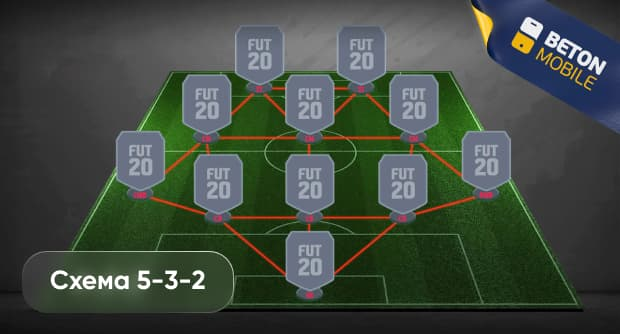

Футбольний тренер
Мій аккаунт
Увага до тактичних схем дуже важлива
Схема 5-3-2 (“тотальний футбол”)
-
Сильна оборона: Забезпечує міцну оборону завдяки п'яти оборонцям.
-
Контроль в центрі поля: Три центральні півзахисники допомагають у контролі середини поля.
-
Захист від крил: Забезпечує захист від атак через крила завдяки двом відправним гравцям.
-
Гнучкість тактики: Можливість змінювати стиль гри в залежності від ситуації.
-
Збереження енергії: Дозволяє гравцям більше економити силу для кінцевої частини гри.
Наступні суперники: Шахтар, Оболонь, Лестер
Поточна позиція команди: 3
Найкращий бомбардир: Русин (16)
Найкращий асистент: Гереро (7)
Сайт розроблений за підтримки Федерації Футболу України
 SYTNYK`S INC@
SYTNYK`S INC@